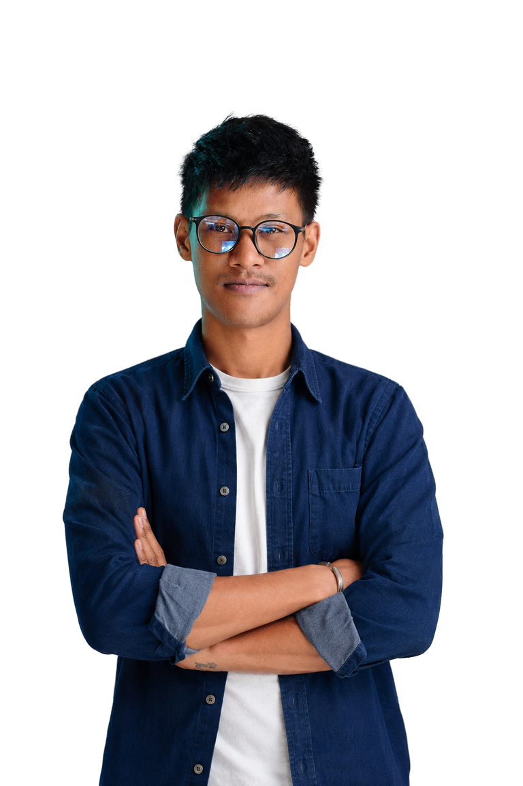

Architecture & Full-Stack
Conception modulaire, API REST, applications web et mobiles, modélisation des données et intégrations tierces.
Consultant IT · Lead Developer Full-Stack
J’architecture, sécurise et déploie des applications web et mobiles conçues pour durer — des plateformes distribuées offline-first aux produits enrichis par l’IA.

Mon expertise
Je combine leadership technique, compréhension métier et exigence d’ingénierie pour construire des solutions maintenables, performantes et sûres.
Conception modulaire, API REST, applications web et mobiles, modélisation des données et intégrations tierces.
OAuth2, JWT, RBAC, gestion centralisée des secrets, validation, contrôle des accès et pratiques OWASP.
Déploiement et exploitation sur Linux, automatisation CI/CD, conteneurisation et reverse proxy.
Intégration d’API IA, workflows assistés, prompt engineering, automatisation et analyse de données.
Projets structurants
Trois missions récentes qui illustrent ma capacité à résoudre des contraintes techniques, métier et opérationnelles complexes.
Architecture distribuée Mère–Fille entre Moodle central et 10 mini-serveurs Raspberry Pi régionaux, avec synchronisation bidirectionnelle et différentielle des contenus, progressions, notes et certificats.
Application de sport, nutrition et bien-être post-partum : architecture NestJS modulaire, parcours progressif de 21 jours, contenus premium, streaming et paiements.
Pages promotionnelles interactives Milka et Oreo, solution B2B de réservation et application mobile de planification, avec sécurité des API et optimisation Lighthouse.
Expérience
FANAINGA+ / GIZ · Projet Arise
Architecture distribuée, leadership technique, produits web et mobile, sécurité et infrastructure.BICI · Mondelez, Mautourco, RAPP & ITU Labs
Développement React/React Native, API sécurisées, maintenance PHP et amélioration continue.BICI · Projet SPAT
Support applicatif, modules Achats–Facturation–Trésorerie, Java, Oracle et JasperReports.Ministère de l’Eau, de l’Assainissement et de l’Hygiène
Plateforme cartographique temps réel, API Node.js, données MySQL et accompagnement métier.Formation
Big Data & Artificial Intelligence
ESTIA — IA, Machine Learning, analyse de données, Python et intégration de solutions IA.Intégration Web & Web Design
IT University — développement web, intégration responsive et conception d’interfaces.Un projet en tête ?
Besoin de structurer une architecture, sécuriser une API, faire évoluer un produit ou lancer une nouvelle application ? Échangeons.